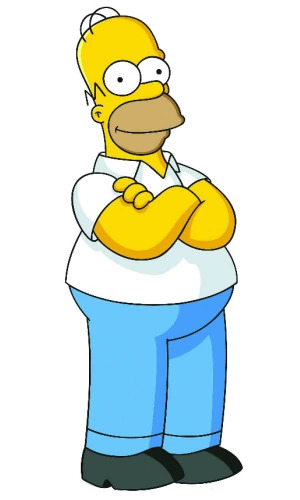
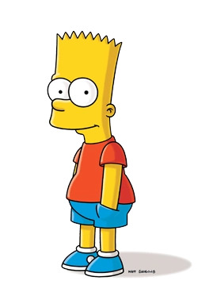
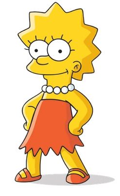

We are Simpsons

The series is a satirical depiction of American life, epitomized by the Simpson family, which consists of Homer,
Marge, Bart, Lisa, and Maggie. The show is set in the fictional town of Springfield and parodies American
culture and society, television, and the human condition.

Homer is overweight (said to be ~240 pounds), lazy, and often ignorant to the world around him. Although Homer
has many flaws, he has shown to have great caring, love, and even bravery to those he cares about and,
sometimes, even others he doesn't. He also serves as the main protagonist of the The Simpsons Movie.
- “Lisa! Knock off that racket!”
- “I am evil Ho-mer! I am evil Ho-mer! I am evil Ho-mer!”
- “Better them than me... Oh wait, that was me.”

Bartholomew "Bart" Jojo Simpson (born April 1 or February 23) is the mischievous, rebellious, misunderstood,
disruptive and "potentially dangerous" oldest child of the Simpson family in The Simpsons. He is the only son of
Homer and Marge Simpson, and the older brother of Lisa and Maggie.
- “Ay Caramba!”
- “Eat my shorts!”
- “Don't have a cow, man.”

Intelligent, kind and passionate about the planet and all living things, Lisa Simpson, at eight years old, is the
second child of Homer and Marge, the younger sister of Bart, and the older sister of Maggie
- “If anyone wants me, I'll be in my room.”
- “Quit it, Bart!”
- “BAAAAART!!”